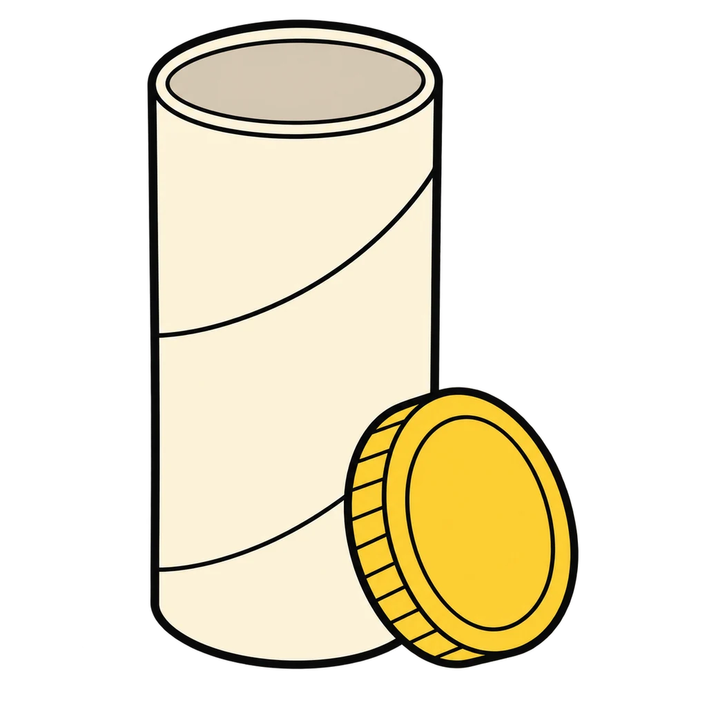
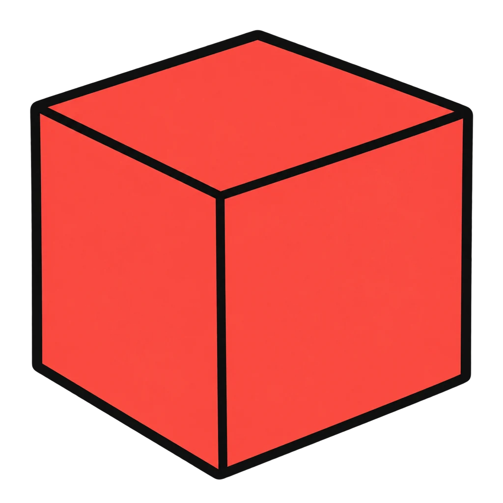
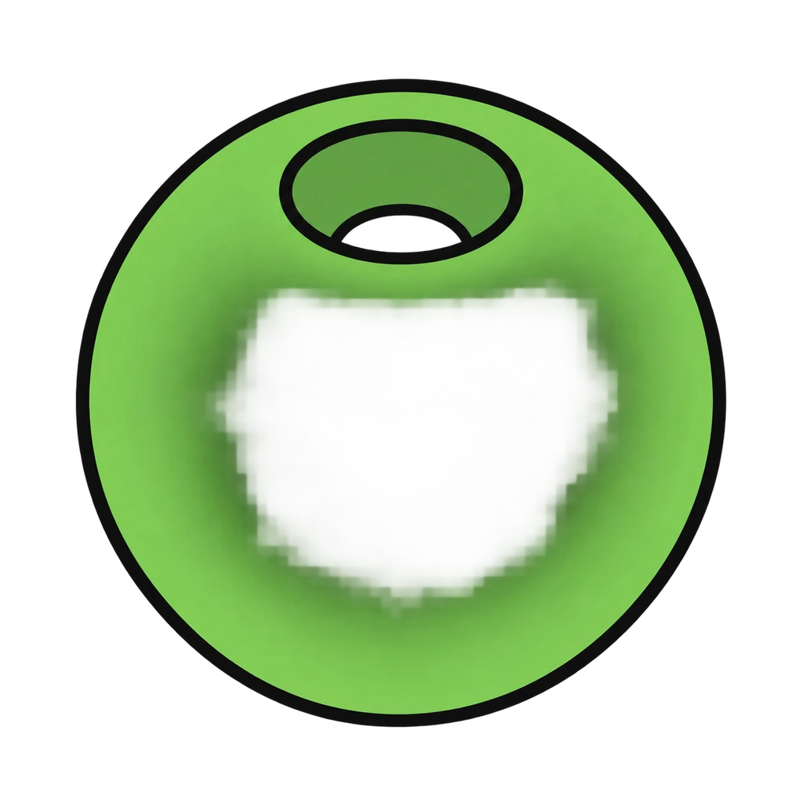
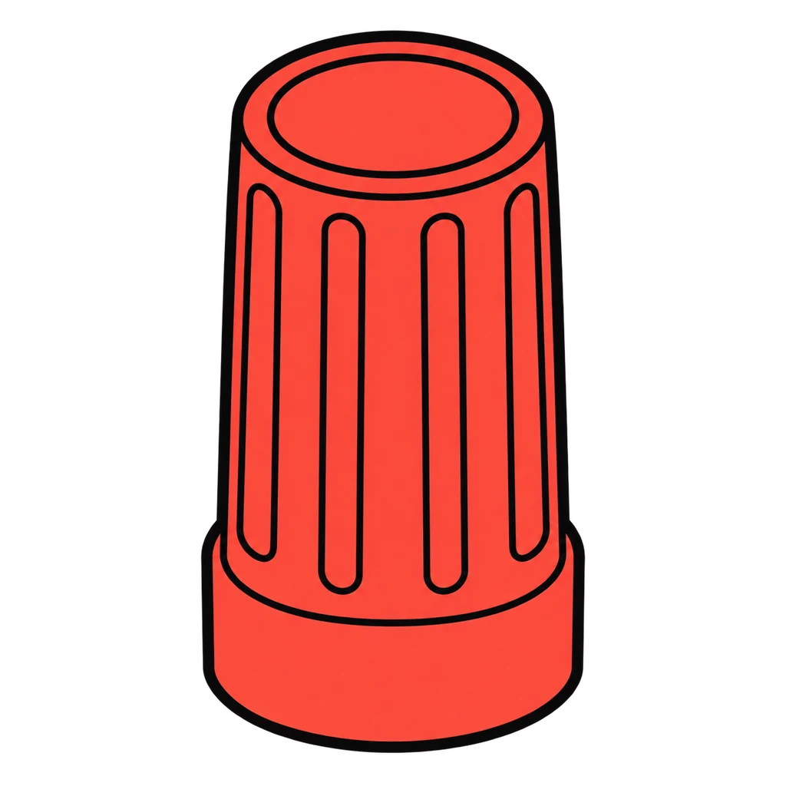
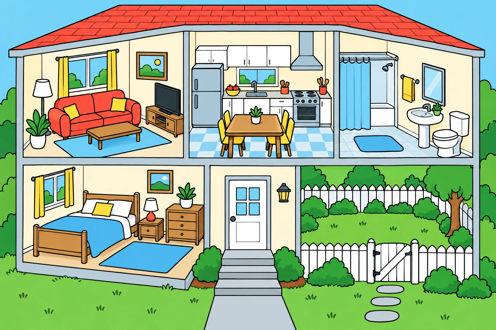

Reviews Lesson 3.17. Safety Walk reviews Lesson 3.17: the safety walk through Eli's home, the tube test, and the four job scenarios. Use it the day after the lesson, before the Project 03 safety checklist in Lesson 3.18 Day 2, or as review for Unit 3 Test item 19. The scene is the handout's described home drawn as a cutaway, so a student who did the paper walk will know where to look; every tap gives the key's fix, and the end panel names the bathtub, the bucket, and the open gate first if they were missed, because those are the three the key says to check on every walk. The game does not dramatize rule 3; the seven rules are in the study list as the handout prints them. Hazard Hunt in Unit 1 is a different picture and a different list (kitchen hazards for a cook); this one is toddler hazards for a babysitter.

Safety Walk
A cutaway of Eli's home appears: living room, kitchen, bathroom, bedroom, back door, and yard. Tap every toddler hazard, and each tap names the fix. Then tap fits or does not fit for the tube test.
How to play
- Never leave a young child alone. Not for a minute, not to answer the door. Take them with you.
- Safe sleep: a baby sleeps on their back, in a crib or bassinet, on a firm flat mattress, with nothing else in it. No blanket, no pillow, no stuffed animal, no bumper.
- Never shake a baby. Ever. If a baby will not stop crying: put them down safely on their back in the empty crib, step out for two minutes, breathe, check them, then call the parent.
- Small objects and choking foods stay out of reach. Anything that fits through a toilet paper tube can choke a child under 3. A child under 4 eats sitting down with an adult watching. No whole grapes, hot dogs, hard candy, nuts, popcorn, or chunks of raw carrot or apple.
- Water and stairs: never look away. A child can drown in two inches of water. The bath is never left, not for a towel. Stairs get a gate or a hand.
- In an emergency, call 911 first for anything you cannot handle. Know the address. Know the parent's number and a backup. Then call the parent.
- Know when to say no to a job. Short jobs, a child old enough to talk, a parent you know and can reach, a house you have seen, daylight or early evening, no infants overnight.
- The three the key says to check for on every walk are the bathtub, the bucket, and the open gate; the end panel names any of those three that were missed first. The throw blanket on the couch is a bonus catch in the key and is drawn in but not a target or a decoy.




Done
The ones to study:
Worth knowing by heart:
- The seven rules and why each exists (Handout 03.17 Part 1)
- The safety walk key: fourteen findings by room (Part 2)
- The tube test: fits through = danger
- The emergency card lines (Part 3) and the general rule for 12 to 14 year olds (rule 7)